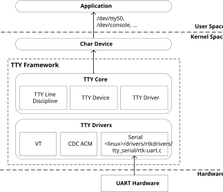
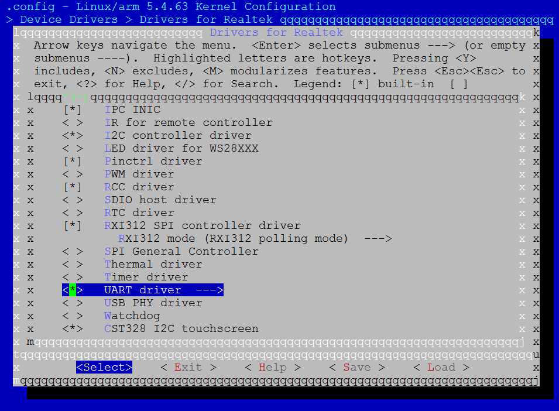
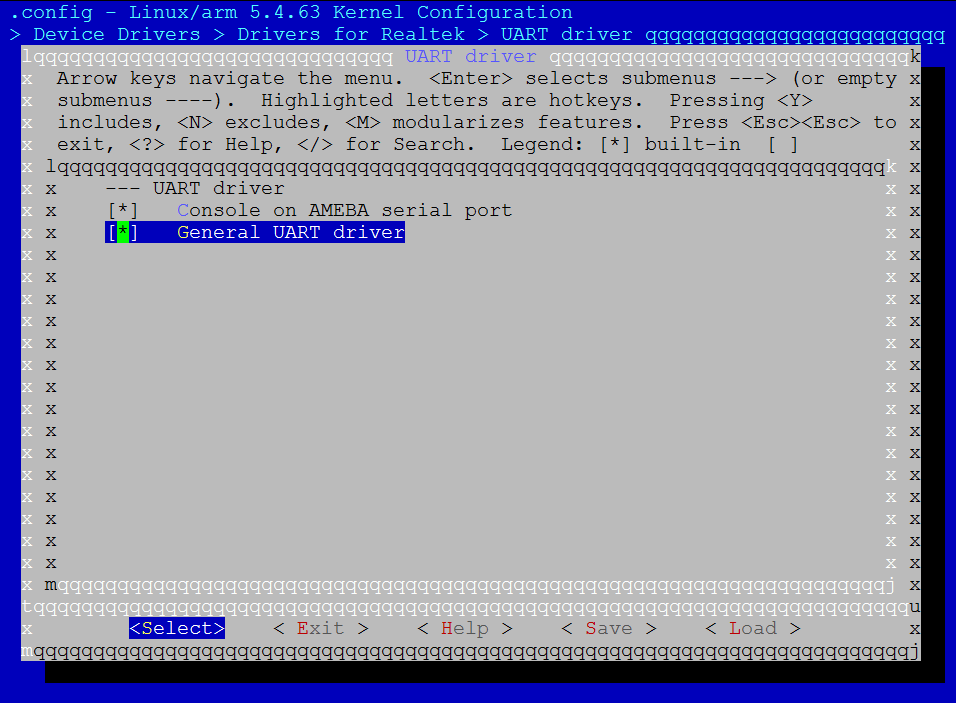

Introduction
The UART driver is designed to support RTL8730E TTY serial module.
Architecture
The UART driver follows Linux TTY subsystem. The architecture is shown in the following figure.
{kind=link}

TTY subsystem architecture
The TTY framework shields details related to TTY through TTY core, provides a unified interface to the application in the form of character device for the top layer, and provides a driver writing framework in the form of TTY device/TTY driver for the bottom layer.
The TTY framework consists of TTY core and TTY drivers. TTY drivers can be Serial, USB CDC ACM class, VT, etc. TTY Serial can adapt UART hardware among them and Realtek UART driver is implemented in this part. TTY line discipline is used to help TTY driver format data. TTY Device/TTY Driver is the core logic of TTY framework.
Implementation
The UART driver is implemented as following files:
Driver location |
Introduction |
|---|---|
<linux>/drivers/rtkdrivers/tty_serial/Kconfig |
UART driver Kconfig |
<linux>/drivers/rtkdrivers/tty_serial/Makefile |
UART driver Makefile |
<linux>/drivers/rtkdrivers/tty_serial/rtk-uart.c |
UART driver code. |
Configuration
DTS Configuration
There are three General UART hardware. Their DTS nodes are defined in <dts>/rtl8730e-ocp.dtsi.
Take UART0 node as an example:
Uart0: serial@41004000 {
compatible = "realtek,ameba-uart";
reg = <0x41004000 0x100>;
interrupts = <GIC_SPI 50 IRQ_TYPE_LEVEL_HIGH>;
clocks = <&rcc RTK_CKE_UART0>;
status = "disabled";
};
The following is property description.
Property |
Description |
Configurable? |
|---|---|---|
compatible |
ID to match the driver and device. |
No |
reg |
Register resource. |
No |
interrupts |
SPI interrupt. |
No |
clocks |
UART clock node. |
No |
status |
Whether enable this device
|
Yes |
DTS nodes of pinctrl are defined in <dts>/rtl8730e-pinctrl.dtsi.
Also take UART0 as an exmaple:
uart0_pins: uart0@0 {
pins {
pinmux = <REALTEK_PINMUX('A', 15, LOG_UART_RTS_CTS)>, // UART0_CTS
<REALTEK_PINMUX('A', 16, LOG_UART_RTS_CTS)>, // UART0_RTS
<REALTEK_PINMUX('A', 2, UART_DATA)>, // UART0_RXD
<REALTEK_PINMUX('A', 3, UART_DATA)>; // UART0_TXD
bias-pull-up;
slew-rate = <0>;
drive-strength = <0>;
};
};
The following is property description.
Property |
Description |
Configurable? |
|---|---|---|
pinmux |
Pinmux definition of UART. |
Yes |
bias-pull-up |
Pin pull status. |
Yes |
slew-rate |
Pin voltage slew rate |
No |
drive-strength |
Pin drive strength. |
No |
Refer to pinmux specification to get other pinmux selection and other UART hardware pin assignment.
The following is aliases group of all three General UART for UART driver:
aliases{
serial0 = &uart0;
serial1 = &uart1;
serial2 = &uart2;
serial3 = &uart3;
}
Build Configuration
Select :
{kind=link}

UART driver configuration
{kind=link}

General UART driver configuration
APIs
APIs for User Space
The UART is TTY serial device, which is also character device, so user can access UART through character device interface. TTY subsystem provides user space interface:
/dev/ttyRTK0 – TTY serial interface for Realtek UART hardware.
User can use this node to control UART terminal and transfer data. The following is command example.
Command to send data:
echo helloworld > /dev/ttyRTK0
Command to receive data:
cat /dev/ttyRTK0
User can use command stty to control UART setting. For example, show setting:
stty -F /dev/ttyRTK0 -a
Refer to demo code to get more details. UART demo is located at <test>/uart.
APIs for Kernel Space
Refer to https://www.kernel.org/doc/html/v5.4/driver-api/miscellaneous.html#x50-uart-driver for more details.